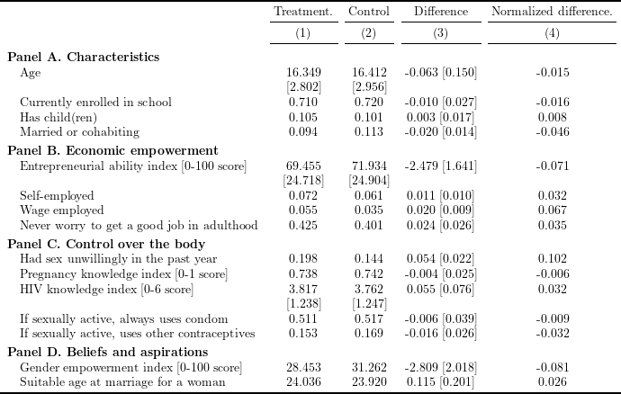

To read the created .tex file, the following \(\LaTeX\) packages are required:
# Install and load packages ---------------
packages <- c(
"tidyverse",
"haven",
"lfe",
"stargazer",
"broom",
"kableExtra",
"magrittr"
)
pacman::p_load(packages, character.only = TRUE, install = TRUE)
# Load an example dataset ---------------
data <- read_dta("Bandiera2020_replication/ELA.dta")# outcome variables
var_panelA <- c("age", "E_Denrolled", "M_children", "partner")
var_panelB <- c("Entrep_total", "selfempl", "empl", "worry_job")
var_panelC <- c("R_sexunwilling", "sex_pregnancy", "Rhiv_skillsALT", "always_condom", "other_contraceptive")
var_panelD <- c("empowerment", "M_idealmarry_ageF")
# variable labels
var_label <- c(
"Age", "Currently enrolled in school",
"Has child(ren)", "Married or cohabiting",
"Entrepreneurial ability index [0-100 score]",
"Self-employed", "Wage employed",
"Never worry to get a good job in adulthood",
"Had sex unwillingly in the past year",
"Pregnancy knowledge index [0-1 score]",
"HIV knowledge index [0-6 score]",
"If sexually active, always uses condom",
"If sexually active, uses other contraceptives",
"Gender empowerment index [0-100 score]",
"Suitable age at marriage for a woman"
)
# mean and SD of variables
sum_mat <- data %>%
group_by(treatment) %>%
summarise_at(
c(var_panelA, var_panelB, var_panelC, var_panelD),
list(mean = mean, sd = sd),
na.rm = TRUE
) %>%
arrange(desc(treatment)) %>%
select(- treatment) %>%
ungroup()
# mean of variables
mean_mat <- sum_mat %>%
select(ends_with("_mean")) %>%
t()
# SD of variables
sd_mat <- sum_mat %>%
select(ends_with("_sd")) %>%
t()
# SD of variables (as string)
sd_mat_str <- sd_mat %>%
formatC(digits = 3, format = "f") %>%
as_tibble() %>%
mutate(
across(
.fns = ~ paste0("[", ., "]")
)
)
# difference in outcomes between treatment and control
# (s.e. clustered by villid)
diff <- map_df(
c(var_panelA, var_panelB, var_panelC, var_panelD),
function(x) felm(
formula(
paste0(
x, "~ treatment | 0 | 0 | villid"
)
),
data = data
) %>%
summary() %>%
.$coefficients %>%
.["treatment", c("Estimate", "Cluster s.e.")] %>%
formatC(digits = 3, format = "f")
) %>%
mutate(
se = paste0("[", `Cluster s.e.`, "]"),
diff = paste(Estimate, se)
) %>%
select(diff) %>%
as.matrix()
# normalized difference
norm_diff <- ((mean_mat[,1] - mean_mat[,2]) / sqrt(sd_mat[,1]^2 + sd_mat[,2]^2)) %>%
formatC(digits = 3, format = "f")
# matrix without standard deviations
mat_wo_sd <- cbind(
var_label,
mean_mat %>%
formatC(digits = 3, format = "f"),
diff,
norm_diff
)
# output matrix (add SD to mat_wo_sd)
output_mat <- c()
for (i in seq(nrow(mat_wo_sd))) {
output_mat <- rbind(output_mat, mat_wo_sd[i,])
if (i %in% c(1, 5, 11)) {
output_mat <- rbind(output_mat, c("", sd_mat_str[i,], "", ""))
}
}
output_mat %>%
set_colnames(NULL) %>%
kable("latex", booktabs = TRUE, escape = FALSE, align = c("l", rep("c", 4))) %>%
kable_styling(latex_options = "scale_down") %>%
add_header_above(c(" ", paste0("(", seq(4), ")"))) %>%
add_header_above(
c(" ", "Treatment.", "Control", "Difference", "Normalized difference."),
escape = FALSE
) %>%
pack_rows(index = c(
"Panel A. Characteristics" = length(var_panelA) + 1,
"Panel B. Economic empowerment" = length(var_panelB) + 1,
"Panel C. Control over the body" = length(var_panelC) + 1,
"Panel D. Beliefs and aspirations" = length(var_panelD)
)) %>%
save_kable("tex/Bandiera2020_table1_replicate.tex")